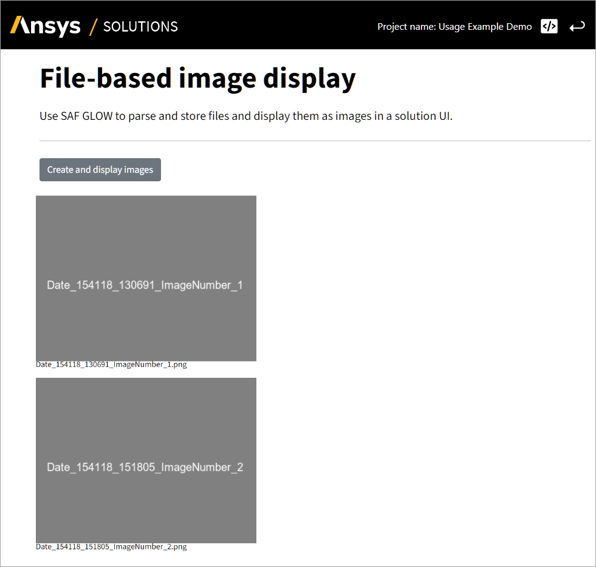

File-based images#
Objective#
The user interface (UI) of a solution app can display images, including images generated by an automated workflow.
As a solution developer, you must know how to display images in the UI. This example demonstrates how to display images that are generated dynamically from files.
On the Display images page, you will create a button. when clicked, it mimics the generation of images and displays an image in the UI with the filename as a legend.
Tip
To just display an image from a URL, you can use dbc.CardImg(src=image.url).
When you complete this example, you can expect the following output in the solution UI:
{kind=link}

Plot for the Display images step#
Prerequisites#
To mimic the creation of files, you need the pillow Python imaging library. Install the library using the following command:
poetry add pillow
Solution#
To display images from files stored in your solution, work through the following sequence of tabs.
Create the solution definition in display_images_step.py.
Define the step model
The UI code (described on the 2️⃣Frontend tab) calls the transaction create_images(),
which populates the class variable result_files, which is of type FileGroupReference.
First, declare result_files as a step field in the step model for the Display images step.
Then, define the transaction method create_images():
Use the
@transactiondecorator and specify the name of the class variableresult_filesto be uploaded after the end of transaction.Inside the function, use the
pillowlibrary to generate three images to theimagesdirectory in the transaction’s folder.All the
PNGfiles inside this directory will then be:automatically uploaded to the project database, and
accessible from the step variable
result_files.
import datetime
import os
from PIL import Image, ImageDraw, ImageFont
from ansys.saf.glow.solution import FileGroupReference, StepModel, StepSpec, transaction
class DisplayImages(StepModel):
"""Step definition of the display_images step."""
result_files: FileGroupReference = FileGroupReference("images/*.png")
@transaction(self=StepSpec(upload=["result_files"], download=[]))
def create_images(self) -> None:
"""Mimic the creation of 3 png files by using pillow library."""
image_path = os.path.join(
self.result_files.project_path, "images"
) # folder where to put images: corresponds to the FileGroupReference
os.mkdir(image_path) # create directory
nb_images = 3
for ind in range(nb_images):
# image name with time stamp
image_name = "Date_" + datetime.datetime.now().strftime("%H%M%S_%f") + "_ImageNumber_" + str(ind + 1)
# generate an image with pillow library
image_with_background = Image.new("RGB", (400, 300), "grey")
ImageDraw.Draw(image_with_background).text(
(20, 150), image_name, font=ImageFont.truetype("arial.ttf", size=20)
)
# save the image in the FileGroupReference
image_with_background.save(os.path.join(image_path, image_name + ".png"))
Create the solution UI in display_images_page.py.
Define the page layout
First, create the Create and display images button using Dash and then create another div named result-images containing all images you want to display. The children of this div are connected to a function create_image_div().
from ansys.saf.glow.client import DashClient, callback
import dash_bootstrap_components as dbc
from dash_extensions.enrich import Input, Output, State, dcc, html
from ansys.solutions.examples.solution.basic.display_images_step import DisplayImages
from ansys.solutions.examples.solution.definition import ExamplesSolution
def layout(step: DisplayImages):
"""Layout of the display_images step UI."""
return html.Div(
[
dcc.Markdown("""#### Display images step""", className="display-3"),
dcc.Markdown("""###### Create and display images.""", className="display-3"),
html.Hr(className="my-2"),
html.Br(),
dbc.Button(
"Create and display images",
id="create-and-display-images",
color="secondary",
class_name="me-1",
),
html.Br(),
html.Br(),
html.Div(id="result-images", children=create_image_div(step.result_files.list_files())), # div where we'll put all the images
]
)
Define the callback
Now, add a callback to be triggered when the button is clicked. Clicking the button performs the following actions:
Triggers a transaction to create the images by populating
step.result_files(see the backend implementation that follows).In
create_image_div(), creates the Dash components to display images with its name as as a legend.
@callback(
Output("result-images", "children"),
Input("create-and-display-images", "n_clicks"),
State("url", "pathname"),
prevent_initial_call=True,
)
def create_images(n_clicks, pathname):
"""Display images through callback."""
project = DashClient[ExamplesSolution].get_project(pathname)
step = project.steps.display_images_step
for image in step.result_files.list_files():
image.delete() # clean the directory
step.create_images()
image_div_children = create_image_div(step.result_files.list_files())
return image_div_children
def create_image_div(result_files):
"""Create image div."""
all_images = []
for image in result_files:
all_images += [html.Div(html.Img(src=image.url, height="400px"), style={"flex": "1"})] # div for the image
image_name = image.url.split("/")[-1] # get only the file name from path
image_legend = html.Label(image_name, style={"font-size": "20px"})
all_images += [image_legend, html.Br(), html.Br()] # label for the image's legend
return all_images
Now that your implementation is complete, continue to the Testing section.
Testing#
Finally, test your implementation to confirm it works as expected.
Run the solution and compare your results with the results shown in the Objective section.